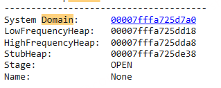
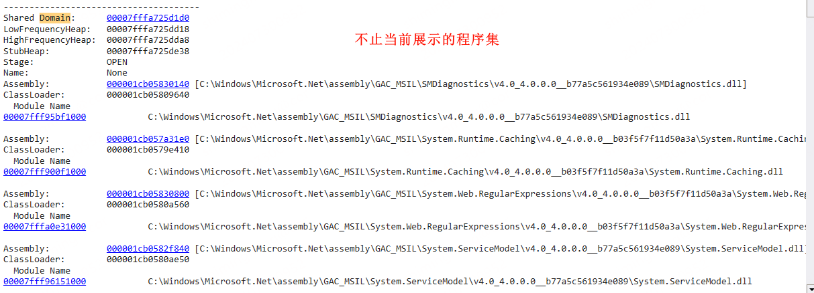
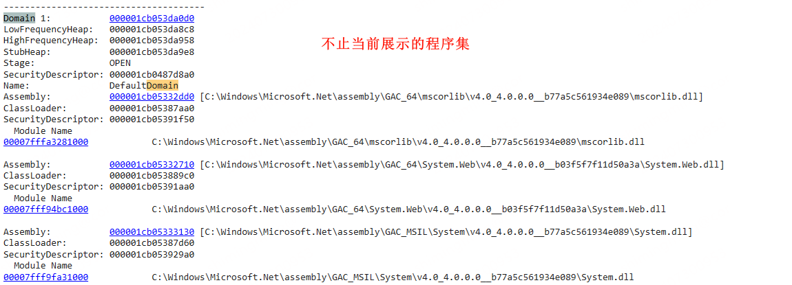
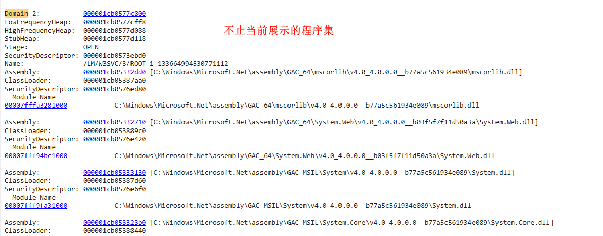
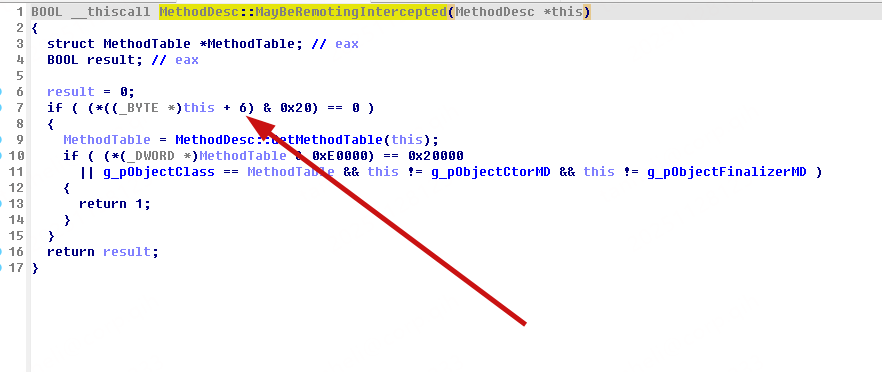

阅读这篇文章你会了解到：
- AppDomain 是什么
- SystemDomain、SharedDomain、DefaultDomain
- 如何创建 AppDomain
- 如何跨 AppDomain 加载程序集并调用指定接口
[toc]
相关文章：
The Truth About .NET Objects And Sharing Them Between AppDomains - Geeks with Blogs
AppDomain & Assembly
应用程序域是 .NET 中用于提供隔离的执行环境的一个概念，它允许在同一个进程中运行多个应用程序域，每个应用程序域都有自己独立的代码、数据和配置。应用程序域之间是相互隔离的，这种隔离提供了更高的安全性和稳定性，并允许动态加载和卸载程序集。
关于 AppDomain 我的理解是，可以参考系统和进程。一个系统由多个进程，一个进程可以有多个AppDomain。AppDomain 之间也和进程一样是隔离的。但不同的是，AppDomain 又大致分为三类，SystemDomain、ShreadDomain、DefaultDomain 官方并没有对这三个 AppDomain 进行说明。这里我就个人理解说明一下：
用 Windbg 调试可以使用 !DumpDomain 查看域信息，可以转储一个 w3wp 的 dump 调试一下看看。这里以 w3wp 为例。
-
SystemDomain:

描述:
SystemDomain是 .NET 运行时启动时创建的第一个应用程序域。它主要用于加载和执行与 .NET 运行时自身相关的核心库和代码，如mscorlib.dll，该库包含了 .NET Framework 的基本类。功能:
- 管理 .NET 运行时的启动和初始化。
- 加载和执行 .NET 运行时的核心组件。
- 提供一个安全的隔离环境，以确保 .NET 运行时的稳定性。
-
SharedDomain:

描述:
SharedDomain是一个特殊的应用程序域，用于共享 .NET 运行时中某些全局静态数据。这个域通常用于托管全局的和通用的类型，例如共享类型和静态字段，以减少内存使用和提高性能。功能:
- 提供一个全局共享的区域，用于存储共享的静态数据和类型。
- 优化内存使用和性能，通过减少冗余的静态数据。
-
DefaultDomain:
》DefaultDomain1: DefaultDomain

》 DefaultDomain2：
描述:
DefaultDomain是在 .NET 运行时启动之后创建的第一个应用程序域，用于加载并执行应用程序代码。每个 .NET 进程启动时，都会自动创建一个DefaultDomain。功能:
- 加载并执行应用程序代码。
- 提供一个隔离的执行环境，用于托管应用程序的代码和资源。
- 支持跨应用程序域的代码和资源隔离，提高安全性和稳定性。
在AppDomain中调用
方法一：
public class SimpleAssemblyLoader : MarshalByRefObject
{
public void Load(string path)
{
ValidatePath(path);
Assembly.Load(path);
}
public void LoadFrom(string path)
{
ValidatePath(path);
Assembly.LoadFrom(path);
}
private void ValidatePath(string path)
{
if (path == null) throw new ArgumentNullException("path");
if (!System.IO.File.Exists(path))
throw new ArgumentException(String.Format("path \"{0}\" does not exist", path));
}
}方法二：
public class SimpleAssemblyLoader : MarshalByRefObject
{
public void Load(string path)
{
ValidatePath(path);
Assembly.Load(path);
}
public void LoadFrom(string path)
{
ValidatePath(path);
Assembly.LoadFrom(path);
}
private void ValidatePath(string path)
{
if (path == null) throw new ArgumentNullException("path");
if (!System.IO.File.Exists(path))
throw new ArgumentException(String.Format("path \"{0}\" does not exist", path));
}
}如何使用：
Type proxyType = typeof(Sandboxer);
MarshalByRefObject proxy =
(MarshalByRefObject)domain.
CreateInstanceFrom(
proxyType.Assembly.Location,
proxyType.FullName).Unwrap();JIT On Another AppDomain
ObjectHandle handle = Activator.CreateInstanceFrom(
domain, typeof(Process).Assembly.ManifestModule.FullyQualifiedName,
typeof(Process).FullName
);
//TODO 尝试 JIT
ObjectHandle handle1 = domain.CreateInstanceFrom(
typeof(Process).Assembly.ManifestModule.FullyQualifiedName,
typeof(Process).FullName
);
Process DomainProcess = (Process)handle.Unwrap();
var Methods = DomainProcess.GetType().GetRuntimeMethods().ToList();
var StartWithCreateProcess = Methods.Where(_ => _.Name == "StartWithShellExecuteEx").FirstOrDefault();
var StartWithShellExecuteEx = Methods.Where(_ => _.Name == "StartWithCreateProcess").FirstOrDefault();
var methodhandle = StartWithCreateProcess.MethodHandle;
var methodAttr = StartWithCreateProcess.Attributes;
var methodType = methodhandle.GetType();
if(false)
{
try
{
StartWithCreateProcess.Invoke(null, null);
StartWithShellExecuteEx.Invoke(null, null);
}
catch (Exception ex)
{
int error = Marshal.GetLastWin32Error();
Natives.OutputDebug(ex.StackTrace + $"error:{error}, " + ex.Message);
}
}
// RuntimeHelpers.PrepareMethod(StartWithShellExecuteEx);
if (!((methodAttr & MethodAttributes.Abstract) == MethodAttributes.Abstract || methodType.ContainsGenericParameters))
{
RuntimeHelpers.PrepareMethod(methodhandle);
}
methodhandle = StartWithCreateProcess.MethodHandle;创建 AppDomain 并传递数据
如下所示，循环创建 AppDomain 并传递数据到所创建的 AppDomain 中。
class Program {
/// <summary>
/// Show how to pass an object by reference directly into another appdomain
/// without serializing it at all.
/// </summary>
/// <param name="args"></param>
[LoaderOptimization(LoaderOptimization.MultiDomainHost)]
static public void Main(string[] args) {
for (int i = 0; i < 10000;
i++) // try it often to see how the AppDomains do behave
{
// To load our assembly appdomain neutral we need to use MultiDomainHost
// on our hosting and child domain If not we would get different Method
// tables for the same types which would result in InvalidCastExceptions
// for the same type.
// Prerequisite for MultiDomainHost is that the assembly we share the data
// is a) Installed into the GAC (which requires as strong name as well) If
// you would use MultiDomain then it would work but all AppDomain neutral
// assemblies will never be unloaded.
var other = AppDomain.CreateDomain(
"Test" + i.ToString(), AppDomain.CurrentDomain.Evidence,
new AppDomainSetup {
LoaderOptimization = LoaderOptimization.MultiDomainHost,
});
// Create gate object in other appdomain
DomainGate gate = (DomainGate)other.CreateInstanceAndUnwrap(
Assembly.GetExecutingAssembly().FullName,
typeof(DomainGate).FullName);
// now lets create some data
CrossDomainData data = new CrossDomainData();
data.Input = Enumerable.Range(0, 10).ToList();
// process it in other AppDomain
DomainGate.Send(gate, data);
// Display result calculated in other AppDomain
Console.WriteLine("Calculation in other AppDomain got: {0}",
data.Aggregate);
AppDomain.Unload(other);
// check in debugger now if UnitTests.dll has been unloaded.
Console.WriteLine("AppDomain unloaded");
}
}使用 LoaderOptimzation.MultiDomainHost 卸载在另一个 AppDomain 没有 GC 的程序集。同时必须从 GAC 加载自定义的 CrossDomainData 的程序集。
/// <summary>
/// Enables sharing of data between appdomains as plain objects without any
/// marsalling overhead.
/// </summary>
class DomainGate : MarshalByRefObject {
/// <summary>
/// Operate on a plain object which is shared from another AppDomain.
/// </summary>
/// <param name="gcCount">Total number of GCs</param>
/// <param name="objAddress">Address to managed object.</param>
public void DoSomething(int gcCount, IntPtr objAddress) {
if (gcCount != ObjectAddress.GCCount) {
throw new NotSupportedException(
"During the call a GC did happen. Please try again.");
}
// If you get an exception here disable under Projces/Debugging/Enable
// Visual Studio Hosting Process The appdomain which is used there seems to
// use LoaderOptimization.SingleDomain
CrossDomainData data =
(CrossDomainData)PtrConverter<Object>.Default.ConvertFromIntPtr(
objAddress);
;
// process input data from other domain
foreach (var x in data.Input) {
Console.WriteLine(x);
}
OtherAssembliesUsage user = new OtherAssembliesUsage();
// generate output data
data.Aggregate = data.Input.Aggregate((x, y) => x + y);
}
public static void Send(DomainGate gate, object o) {
var old = GCSettings.LatencyMode;
try {
GCSettings.LatencyMode =
GCLatencyMode.Batch; // try to keep the GC out of our stuff
var addandGCCount = ObjectAddress.GetAddress(o);
gate.DoSomething(addandGCCount.Value, addandGCCount.Key);
} finally {
GCSettings.LatencyMode = old;
}
}
}获取不同 AppDomain 下的程序集地址
参考文章
Jitex/src/Jitex/Utils/ModuleHelper.cs at 89e3faa23b1a38933c46915c6ad5b1c6964824dd · Hitmasu/Jitex
原理
主要通过 Module. m_pData 获取程序加载地址。不同 AppDomain 下程序集的加载地址是不同的。
JIT 调用原理

private static int GetInvocationFlags(MethodInfo method)
{
if (method == null) return 0;
try
{
// 运行时实际类型（通常是内部的 RuntimeMethodInfo）：
Type runtimeType = method.GetType();
// 尝试读取非公开字段 m_invocationFlags（在当前 CLR 实现中存在）
var f = runtimeType.GetField("m_invocationFlags", BindingFlags.NonPublic | BindingFlags.Instance);
if (f != null)
{
object val = f.GetValue(method);
if (val != null)
{
// boxed enum -> 转为 int
return Convert.ToInt32(val);
}
}
}
catch
{
// 忽略反射失败，走下一步回退方案
}
try
{
// 回退：读取 MethodDesc 的 m_dwFlags（第 6 字节），已有代码中也使用类似方式
IntPtr handle = method.MethodHandle.Value;
byte b = Marshal.ReadByte(IntPtr.Add(handle, 6));
return (int)b;
}
catch
{
return 0;
}
}
// 如下所示为修改标志位并执行 PrePareMethod 的逻辑
// OldMethod 获取逻辑如下所示
// this.OldMethod = Clazz.GetMethod(TargetMethodName, this.oldbindingfalgs);
// InvocationFlags
uint INVOCATION_FLAGS_INITIALIZED = 0x00000001;
// MethodDescClassification
byte mdcRequiresInheritanceCheck = 0x80;
byte mdcStatic = 0x20;
byte bTargetMDC = 0;
// 读取 m_dwFlags 字段，判断方法是否已经被初始化
byte bOriginMDC = 0;
bool bChangeMDC = false;
if (this.OldMethod != null)
{
uint flags = (uint)GetInvocationFlags(this.OldMethod);
Natives.OutputInfo("OldMethod InvocationFlags: " + flags);
if((INVOCATION_FLAGS_INITIALIZED & flags) == INVOCATION_FLAGS_INITIALIZED)
{
bOriginMDC = Marshal.ReadByte(this.OldMethod.MethodHandle.Value + 6);
int iNextFlag = Marshal.ReadInt32(this.OldMethod.MethodHandle.Value + 8);
if (iNextFlag < 0xFF &&
(bOriginMDC & mdcRequiresInheritanceCheck) == mdcRequiresInheritanceCheck)
{
bChangeMDC = true;
Reporter.OutputInfo("The OldMethod has been initialized before hook, Method:" + this.HookMethodName);
bTargetMDC = bOriginMDC;
bTargetMDC &= 0x0F; // 保留其他标志位不变
bTargetMDC |= mdcStatic;
Marshal.WriteByte(this.OldMethod.MethodHandle.Value + 6, (byte)bTargetMDC);
}
}
}
RuntimeHelpers.PrepareMethod(OldMethod.MethodHandle);
if(bChangeMDC)
{
Marshal.WriteByte(this.OldMethod.MethodHandle.Value + 6, bOriginMDC);
}